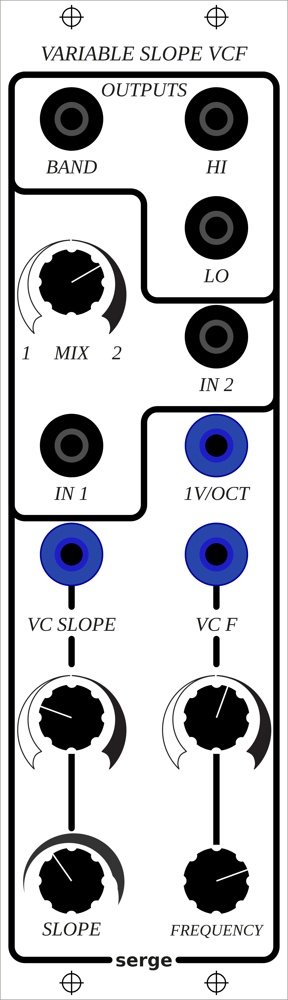

Variable Slope VCF
VCFS · Slope Filter
A two-pole filter whose slope knob moves from a gentle 6 dB/octave through flat to sharp and resonant.
- Design
- Serge Tcherepnin
- Function
- Filter
- Panel widths
- 2"
- Build options
- 1
Panels in this repo


How it works
A state-variable filter with high-pass, low-pass and band-pass outputs at once. Its frequency is set by knob, VC F and a 1V/OCT input.
The SLOPE control (and its VC input) changes the response: at the centre it is a normal 12 dB/octave filter, towards one end resonance and steepness increase, towards the other the slope relaxes to 6 dB/octave.
Two inputs are blended with the MIX knob, so the filter can crossfade between sources.
Controls and jacks
| Name | Type | What it does |
|---|---|---|
| IN 1, IN 2 + MIX | inputs / knob | Two sources, crossfaded. |
| BAND, HI, LO | outputs | Filter responses. |
| SLOPE + VC SLOPE | knob / input | Slope and resonance. |
| FREQUENCY, VC F, 1V/OCT | knob / inputs | Cutoff. |
Build options
Low-Gain LGE111 Slope Filter
- Offered as
- Assembled module or DIY PCBs
- Format
- 4U Serge, Loudest Warning-style mounting
- Schematic
- availableLow-Gain schematics (Google Drive, linked below)
- BOM
- availableLow-Gain BOMs (Google Drive, linked below)
- Documents
- LGE111 Main PCB BOM
LGE111 Main PCB schematic
LGE111 Main PCB modification (simple jumper)
LGE111C I/O PCB BOM
LGE111C I/O PCB (wiring diagram) schematic
LGE108 Gain Cell schematic
Known issue: with inputs above about 2.5 V peak-to-peak, Slope at mid-rotation and Frequency fully up, the filter can take off and thump. Low-Gain changed R34 from 47K to 75K to fix it, and the BOM now lists 75K. The main board also has a simple jumper modification, shown on the product page.
The main PCB includes two LGE108 gain cells; fit each cell's 100K trimmer and headers, then calibrate them.
Low-Gain boards set their own jack positions; check them against the panel you use.
Ken Stone's Serge-derived designs may be built for personal use only; Serge Tcherepnin keeps all rights to his circuits. Schematics, parts lists and PCBs belong to their designers and sellers, so these pages link to them rather than copying them.
Bill of materials
Spreadsheet: variable-slope-vcf.csv (CSV; opens in Excel, Numbers or Google Sheets). It lists the parts for every build option: Ken Stone's parts lists, and the parts data from Low-Gain's, Prism's and Elby's own BOMs where they publish one.
The makers' parts lists were copied into the spreadsheet automatically from their PDFs and Mouser carts (values, quantities and reference designators only; each row links its source). Check them against the maker's current BOM before ordering, and read the maker's notes there: they are not repeated here.
Low-Gain LGE111 Slope Filter (83 lines)
| Section | Type | Value / part | Qty | Notes |
|---|---|---|---|---|
| Low-Gain LGE111 Main PCB | Capacitor | 10u | 2 | C1,C7; Electrolytic Capacitor 2mm LS; from Low-Gain's BOM: https://drive.google.com/file/d/1v1yAkfcjfmhtsPAM17l9FFsf1v1S7-L_/view |
| Low-Gain LGE111 Main PCB | Capacitor | 0805/1206 50V Ceramic | 6 | C2,C3,C4,C5,C6,C8; from Low-Gain's BOM: https://drive.google.com/file/d/1v1yAkfcjfmhtsPAM17l9FFsf1v1S7-L_/view |
| Low-Gain LGE111 Main PCB | Capacitor | 100n | 10 | C9,C10,C11,C12; CERAMIC CAP_1206; from Low-Gain's BOM: https://drive.google.com/file/d/1v1yAkfcjfmhtsPAM17l9FFsf1v1S7-L_/view |
| Low-Gain LGE111 Main PCB | Capacitor | 220p | 1 | C13; Ceramic Cap 5mm LS; from Low-Gain's BOM: https://drive.google.com/file/d/1v1yAkfcjfmhtsPAM17l9FFsf1v1S7-L_/view |
| Low-Gain LGE111 Main PCB | Capacitor | 220p POLY | 2 | C14,C18; Polypropylene OR Film; from Low-Gain's BOM: https://drive.google.com/file/d/1v1yAkfcjfmhtsPAM17l9FFsf1v1S7-L_/view |
| Low-Gain LGE111 Main PCB | Capacitor | 10pF | 2 | C15,C17; FILM Capacitor 5mm LS; from Low-Gain's BOM: https://drive.google.com/file/d/1v1yAkfcjfmhtsPAM17l9FFsf1v1S7-L_/view |
| Low-Gain LGE111 Main PCB | Capacitor | 220nF/1uF | 1 | C16; FILM Capacitor 5mm LS; from Low-Gain's BOM: https://drive.google.com/file/d/1v1yAkfcjfmhtsPAM17l9FFsf1v1S7-L_/view |
| Low-Gain LGE111 Main PCB | Diode | 1N4148 | 3 | D1,D2,D3; from Low-Gain's BOM: https://drive.google.com/file/d/1v1yAkfcjfmhtsPAM17l9FFsf1v1S7-L_/view |
| Low-Gain LGE111 Main PCB | Connector | PWR | 1 | HDR_1; AMP .100 4P HDR; from Low-Gain's BOM: https://drive.google.com/file/d/1v1yAkfcjfmhtsPAM17l9FFsf1v1S7-L_/view |
| Low-Gain LGE111 Main PCB | Transistor | DMMT3904 | 1 | Q1; from Low-Gain's BOM: https://drive.google.com/file/d/1v1yAkfcjfmhtsPAM17l9FFsf1v1S7-L_/view |
| Low-Gain LGE111 Main PCB | Transistor | 2N3904 | 1 | Q2; from Low-Gain's BOM: https://drive.google.com/file/d/1v1yAkfcjfmhtsPAM17l9FFsf1v1S7-L_/view |
| Low-Gain LGE111 Main PCB | Resistor | 10R | 2 | R1,R2; 1% Metal Film Resistor; from Low-Gain's BOM: https://drive.google.com/file/d/1v1yAkfcjfmhtsPAM17l9FFsf1v1S7-L_/view |
| Low-Gain LGE111 Main PCB | Resistor | 82K | 1 | R3; 1% Metal Film Resistor; from Low-Gain's BOM: https://drive.google.com/file/d/1v1yAkfcjfmhtsPAM17l9FFsf1v1S7-L_/view |
| Low-Gain LGE111 Main PCB | Resistor | 2K | 1 | R4; 1% Metal Film Resistor; from Low-Gain's BOM: https://drive.google.com/file/d/1v1yAkfcjfmhtsPAM17l9FFsf1v1S7-L_/view |
| Low-Gain LGE111 Main PCB | Resistor | 22K | 5 | R5,R6,R7,R15,R17; 1% Metal Film Resistor; from Low-Gain's BOM: https://drive.google.com/file/d/1v1yAkfcjfmhtsPAM17l9FFsf1v1S7-L_/view |
| Low-Gain LGE111 Main PCB | Resistor | 390R | 1 | R8; 1% Metal Film Resistor; from Low-Gain's BOM: https://drive.google.com/file/d/1v1yAkfcjfmhtsPAM17l9FFsf1v1S7-L_/view |
| Low-Gain LGE111 Main PCB | Resistor | 475R | 2 | R9,R10; 1% Metal Film Resistor; from Low-Gain's BOM: https://drive.google.com/file/d/1v1yAkfcjfmhtsPAM17l9FFsf1v1S7-L_/view |
| Low-Gain LGE111 Main PCB | Resistor | 330K | 4 | R11,R21,R22,R24; 1% Metal Film Resistor; from Low-Gain's BOM: https://drive.google.com/file/d/1v1yAkfcjfmhtsPAM17l9FFsf1v1S7-L_/view |
| Low-Gain LGE111 Main PCB | Resistor | 100K | 1 | R12; 1% Metal Film Resistor; from Low-Gain's BOM: https://drive.google.com/file/d/1v1yAkfcjfmhtsPAM17l9FFsf1v1S7-L_/view |
| Low-Gain LGE111 Main PCB | Resistor | 1M | 2 | R13,R20; 1% Metal Film Resistor; from Low-Gain's BOM: https://drive.google.com/file/d/1v1yAkfcjfmhtsPAM17l9FFsf1v1S7-L_/view |
| Low-Gain LGE111 Main PCB | Resistor | 33K | 2 | R14,R16; 1% Metal Film Resistor; from Low-Gain's BOM: https://drive.google.com/file/d/1v1yAkfcjfmhtsPAM17l9FFsf1v1S7-L_/view |
| Low-Gain LGE111 Main PCB | Resistor | 6K8 | 2 | R18,R19; 1% Metal Film Resistor; from Low-Gain's BOM: https://drive.google.com/file/d/1v1yAkfcjfmhtsPAM17l9FFsf1v1S7-L_/view |
| Low-Gain LGE111 Main PCB | Resistor | 470K | 1 | R23; 1% Metal Film Resistor; from Low-Gain's BOM: https://drive.google.com/file/d/1v1yAkfcjfmhtsPAM17l9FFsf1v1S7-L_/view |
| Low-Gain LGE111 Main PCB | Resistor | 47K | 3 | R25,R34,R35; 1% Metal Film Resistor; from Low-Gain's BOM: https://drive.google.com/file/d/1v1yAkfcjfmhtsPAM17l9FFsf1v1S7-L_/view |
| Low-Gain LGE111 Main PCB | Resistor | 820R | 1 | R26; 1% Metal Film Resistor; from Low-Gain's BOM: https://drive.google.com/file/d/1v1yAkfcjfmhtsPAM17l9FFsf1v1S7-L_/view |
| Low-Gain LGE111 Main PCB | Resistor | 220K | 6 | R27,R31,R32,R33,R30,R36; 1% Metal Film Resistor; from Low-Gain's BOM: https://drive.google.com/file/d/1v1yAkfcjfmhtsPAM17l9FFsf1v1S7-L_/view |
| Low-Gain LGE111 Main PCB | Resistor | 15K | 2 | R28,R29; 1% Metal Film Resistor; from Low-Gain's BOM: https://drive.google.com/file/d/1v1yAkfcjfmhtsPAM17l9FFsf1v1S7-L_/view |
| Low-Gain LGE111 Main PCB | Resistor | 330R | 3 | R37,R38,R39; 1% Metal Film Resistor; from Low-Gain's BOM: https://drive.google.com/file/d/1v1yAkfcjfmhtsPAM17l9FFsf1v1S7-L_/view |
| Low-Gain LGE111 Main PCB | IC | RC4558 | 4 | U1,U2,U3,U5; RC4558P; from Low-Gain's BOM: https://drive.google.com/file/d/1v1yAkfcjfmhtsPAM17l9FFsf1v1S7-L_/view |
| Low-Gain LGE111 Main PCB | IC | LGE108 | 2 | U4,U6; LGE108 GAIN CELL; from Low-Gain's BOM: https://drive.google.com/file/d/1v1yAkfcjfmhtsPAM17l9FFsf1v1S7-L_/view |
| Low-Gain LGE111 Main PCB | Potentiometer | 10K | 1 | VR1; V/OCT; from Low-Gain's BOM: https://drive.google.com/file/d/1v1yAkfcjfmhtsPAM17l9FFsf1v1S7-L_/view |
| Low-Gain LGE111 Main PCB | Other | H2 | 1 | W1; FREQ W; from Low-Gain's BOM: https://drive.google.com/file/d/1v1yAkfcjfmhtsPAM17l9FFsf1v1S7-L_/view |
| Low-Gain LGE111 Main PCB | Wire point | 0V | 1 | W2; Wire Point; from Low-Gain's BOM: https://drive.google.com/file/d/1v1yAkfcjfmhtsPAM17l9FFsf1v1S7-L_/view |
| Low-Gain LGE111 Main PCB | Wire point | H | 1 | W3; Wire Point; from Low-Gain's BOM: https://drive.google.com/file/d/1v1yAkfcjfmhtsPAM17l9FFsf1v1S7-L_/view |
| Low-Gain LGE111 Main PCB | Wire point | V+ | 1 | W4; Wire Point; from Low-Gain's BOM: https://drive.google.com/file/d/1v1yAkfcjfmhtsPAM17l9FFsf1v1S7-L_/view |
| Low-Gain LGE111 Main PCB | Wire point | V- | 1 | W5; Wire Point; from Low-Gain's BOM: https://drive.google.com/file/d/1v1yAkfcjfmhtsPAM17l9FFsf1v1S7-L_/view |
| Low-Gain LGE111 Main PCB | Wire point | GND | 1 | W6; Wire Point; from Low-Gain's BOM: https://drive.google.com/file/d/1v1yAkfcjfmhtsPAM17l9FFsf1v1S7-L_/view |
| Low-Gain LGE111 Main PCB | Wire point | B | 1 | W7; Wire Point; from Low-Gain's BOM: https://drive.google.com/file/d/1v1yAkfcjfmhtsPAM17l9FFsf1v1S7-L_/view |
| Low-Gain LGE111 Main PCB | Other | A | 1 | W8; V/OCT; from Low-Gain's BOM: https://drive.google.com/file/d/1v1yAkfcjfmhtsPAM17l9FFsf1v1S7-L_/view |
| Low-Gain LGE111 Main PCB | Other | G | 1 | W9; N/C; from Low-Gain's BOM: https://drive.google.com/file/d/1v1yAkfcjfmhtsPAM17l9FFsf1v1S7-L_/view |
| Low-Gain LGE111 Main PCB | Other | C | 1 | W10; N/C; from Low-Gain's BOM: https://drive.google.com/file/d/1v1yAkfcjfmhtsPAM17l9FFsf1v1S7-L_/view |
| Low-Gain LGE111 Main PCB | Other | D | 1 | W11; SLOPE; from Low-Gain's BOM: https://drive.google.com/file/d/1v1yAkfcjfmhtsPAM17l9FFsf1v1S7-L_/view |
| Low-Gain LGE111 Main PCB | Other | E | 1 | W12; VC SLOPE CW; from Low-Gain's BOM: https://drive.google.com/file/d/1v1yAkfcjfmhtsPAM17l9FFsf1v1S7-L_/view |
| Low-Gain LGE111 Main PCB | Other | F | 1 | W13; VC SLOPE CCW; from Low-Gain's BOM: https://drive.google.com/file/d/1v1yAkfcjfmhtsPAM17l9FFsf1v1S7-L_/view |
| Low-Gain LGE111 Main PCB | Other | K | 1 | W14; IN1; from Low-Gain's BOM: https://drive.google.com/file/d/1v1yAkfcjfmhtsPAM17l9FFsf1v1S7-L_/view |
| Low-Gain LGE111 Main PCB | Other | N | 1 | W15; IN2; from Low-Gain's BOM: https://drive.google.com/file/d/1v1yAkfcjfmhtsPAM17l9FFsf1v1S7-L_/view |
| Low-Gain LGE111 Main PCB | Other | J | 1 | W16; LP; from Low-Gain's BOM: https://drive.google.com/file/d/1v1yAkfcjfmhtsPAM17l9FFsf1v1S7-L_/view |
| Low-Gain LGE111 Main PCB | Other | P | 1 | W17; HP; from Low-Gain's BOM: https://drive.google.com/file/d/1v1yAkfcjfmhtsPAM17l9FFsf1v1S7-L_/view |
| Low-Gain LGE111 Main PCB | Other | M | 1 | W18; N/C; from Low-Gain's BOM: https://drive.google.com/file/d/1v1yAkfcjfmhtsPAM17l9FFsf1v1S7-L_/view |
| Low-Gain LGE111 Main PCB | Other | L | 1 | W19; BP; from Low-Gain's BOM: https://drive.google.com/file/d/1v1yAkfcjfmhtsPAM17l9FFsf1v1S7-L_/view |
| Low-Gain LGE111 Main PCB | Other | R | 1 | W20; RES1; from Low-Gain's BOM: https://drive.google.com/file/d/1v1yAkfcjfmhtsPAM17l9FFsf1v1S7-L_/view |
| Low-Gain LGE111 Main PCB | Other | R2 | 1 | W21; RES2; from Low-Gain's BOM: https://drive.google.com/file/d/1v1yAkfcjfmhtsPAM17l9FFsf1v1S7-L_/view |
| Low-Gain LGE111C I/O PCB | Capacitor | 100nF | 2 | C4,C5; CERAMIC 50V CAP; from Low-Gain's BOM: https://drive.google.com/file/d/17qIL7S0UBePuwnWR9Ur1A3Jm9RvDgMcM/view |
| Low-Gain LGE111C I/O PCB | Diode | BI-COLOR | 1 | D1; T1 Dual Color; from Low-Gain's BOM: https://drive.google.com/file/d/17qIL7S0UBePuwnWR9Ur1A3Jm9RvDgMcM/view |
| Low-Gain LGE111C I/O PCB | LED | CLEAR | 1 | 5MM LED LENS; from Low-Gain's BOM: https://drive.google.com/file/d/17qIL7S0UBePuwnWR9Ur1A3Jm9RvDgMcM/view |
| Low-Gain LGE111C I/O PCB | Jack | V/OCT | 1 | J1; Emmerson_Banana; from Low-Gain's BOM: https://drive.google.com/file/d/17qIL7S0UBePuwnWR9Ur1A3Jm9RvDgMcM/view |
| Low-Gain LGE111C I/O PCB | Jack | F CV | 1 | J2; Emmerson_Banana; from Low-Gain's BOM: https://drive.google.com/file/d/17qIL7S0UBePuwnWR9Ur1A3Jm9RvDgMcM/view |
| Low-Gain LGE111C I/O PCB | Jack | IN1 | 1 | J3; Emmerson_Banana; from Low-Gain's BOM: https://drive.google.com/file/d/17qIL7S0UBePuwnWR9Ur1A3Jm9RvDgMcM/view |
| Low-Gain LGE111C I/O PCB | Jack | IN2 | 1 | J4; Emmerson_Banana; from Low-Gain's BOM: https://drive.google.com/file/d/17qIL7S0UBePuwnWR9Ur1A3Jm9RvDgMcM/view |
| Low-Gain LGE111C I/O PCB | Jack | HP OUT | 1 | J5; Emmerson_Banana; from Low-Gain's BOM: https://drive.google.com/file/d/17qIL7S0UBePuwnWR9Ur1A3Jm9RvDgMcM/view |
| Low-Gain LGE111C I/O PCB | Jack | LP OUT | 1 | J6; Emmerson_Banana; from Low-Gain's BOM: https://drive.google.com/file/d/17qIL7S0UBePuwnWR9Ur1A3Jm9RvDgMcM/view |
| Low-Gain LGE111C I/O PCB | Jack | BP OUT | 1 | J7; Emmerson_Banana; from Low-Gain's BOM: https://drive.google.com/file/d/17qIL7S0UBePuwnWR9Ur1A3Jm9RvDgMcM/view |
| Low-Gain LGE111C I/O PCB | Jack | SLOPE CV | 1 | J8; Emmerson_Banana; from Low-Gain's BOM: https://drive.google.com/file/d/17qIL7S0UBePuwnWR9Ur1A3Jm9RvDgMcM/view |
| Low-Gain LGE111C I/O PCB | Resistor | 100K | 1 | R1; 1% Metal Film 1/4W Resistor; from Low-Gain's BOM: https://drive.google.com/file/d/17qIL7S0UBePuwnWR9Ur1A3Jm9RvDgMcM/view |
| Low-Gain LGE111C I/O PCB | Resistor | 22K | 2 | R2,R3; 1% Metal Film 1/4W Resistor; from Low-Gain's BOM: https://drive.google.com/file/d/17qIL7S0UBePuwnWR9Ur1A3Jm9RvDgMcM/view |
| Low-Gain LGE111C I/O PCB | Resistor | 1K | 1 | R5; RLED; from Low-Gain's BOM: https://drive.google.com/file/d/17qIL7S0UBePuwnWR9Ur1A3Jm9RvDgMcM/view |
| Low-Gain LGE111C I/O PCB | Resistor | 330R | 1 | R6; 1% Metal Film 1/4W Resistor; from Low-Gain's BOM: https://drive.google.com/file/d/17qIL7S0UBePuwnWR9Ur1A3Jm9RvDgMcM/view |
| Low-Gain LGE111C I/O PCB | Resistor | 1K | 1 | R7; 1% Metal Film 1/4W Resistor; from Low-Gain's BOM: https://drive.google.com/file/d/17qIL7S0UBePuwnWR9Ur1A3Jm9RvDgMcM/view |
| Low-Gain LGE111C I/O PCB | IC | TL071 | 1 | U3; TL071ACP; from Low-Gain's BOM: https://drive.google.com/file/d/17qIL7S0UBePuwnWR9Ur1A3Jm9RvDgMcM/view |
| Low-Gain LGE111C I/O PCB | Potentiometer | B100K | 1 | VR1; FREQ; from Low-Gain's BOM: https://drive.google.com/file/d/17qIL7S0UBePuwnWR9Ur1A3Jm9RvDgMcM/view |
| Low-Gain LGE111C I/O PCB | Potentiometer | B100K | 1 | VR2; FREQ CV; from Low-Gain's BOM: https://drive.google.com/file/d/17qIL7S0UBePuwnWR9Ur1A3Jm9RvDgMcM/view |
| Low-Gain LGE111C I/O PCB | Potentiometer | B100K | 1 | VR3; SLOPE CV; from Low-Gain's BOM: https://drive.google.com/file/d/17qIL7S0UBePuwnWR9Ur1A3Jm9RvDgMcM/view |
| Low-Gain LGE111C I/O PCB | Potentiometer | B100K | 1 | VR4; INPUT1; from Low-Gain's BOM: https://drive.google.com/file/d/17qIL7S0UBePuwnWR9Ur1A3Jm9RvDgMcM/view |
| Low-Gain LGE111C I/O PCB | Potentiometer | B100K | 1 | VR5; INPUT2; from Low-Gain's BOM: https://drive.google.com/file/d/17qIL7S0UBePuwnWR9Ur1A3Jm9RvDgMcM/view |
| Low-Gain LGE111C I/O PCB | Potentiometer | B100K | 1 | VR6*; MIX; from Low-Gain's BOM: https://drive.google.com/file/d/17qIL7S0UBePuwnWR9Ur1A3Jm9RvDgMcM/view |
| Low-Gain LGE111C I/O PCB | Potentiometer | B100K | 1 | VR7; SLOPE; from Low-Gain's BOM: https://drive.google.com/file/d/17qIL7S0UBePuwnWR9Ur1A3Jm9RvDgMcM/view |
| Low-Gain LGE111C I/O PCB | Potentiometer | B250K | 1 | VR8; RES; from Low-Gain's BOM: https://drive.google.com/file/d/17qIL7S0UBePuwnWR9Ur1A3Jm9RvDgMcM/view |
| Low-Gain LGE111C I/O PCB | Knob | 07/08/24 | 0 | KNOB; from Low-Gain's BOM: https://drive.google.com/file/d/17qIL7S0UBePuwnWR9Ur1A3Jm9RvDgMcM/view |
| Low-Gain LGE111C I/O PCB | Hardware | M3X6 BUTTON HEAD SCREW | 8 | TAYDA: A-4372; from Low-Gain's BOM: https://drive.google.com/file/d/17qIL7S0UBePuwnWR9Ur1A3Jm9RvDgMcM/view |
| Low-Gain LGE111C I/O PCB | Hardware | M3 SPLIT WASHER | 8 | from Low-Gain's BOM: https://drive.google.com/file/d/17qIL7S0UBePuwnWR9Ur1A3Jm9RvDgMcM/view |
| Low-Gain LGE111C I/O PCB | Hardware | M3X11 F-F HEX STAND OFFS | 4 | (12mm not 11mm, but will work); from Low-Gain's BOM: https://drive.google.com/file/d/17qIL7S0UBePuwnWR9Ur1A3Jm9RvDgMcM/view |
| Low-Gain LGE111C I/O PCB | Connector | MALE 2.54MM HEADERS 40PIN | 1 | TAYDA: A-197; from Low-Gain's BOM: https://drive.google.com/file/d/17qIL7S0UBePuwnWR9Ur1A3Jm9RvDgMcM/view |
| Low-Gain LGE111C I/O PCB | Connector | FEMALE 2.54MM HEADERS 40PIN | 1 | TAYDA: A-196; from Low-Gain's BOM: https://drive.google.com/file/d/17qIL7S0UBePuwnWR9Ur1A3Jm9RvDgMcM/view |
Panel hardware
Front-panel parts for each panel in this repo, counted from the panel files. Board parts (resistors, ICs, trimmers) are in each build option's own BOM.